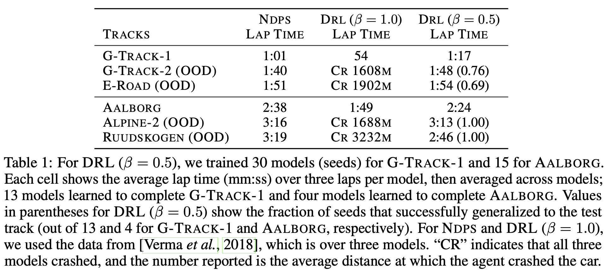
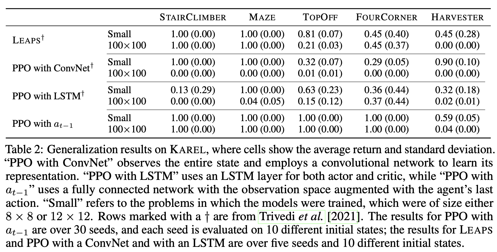
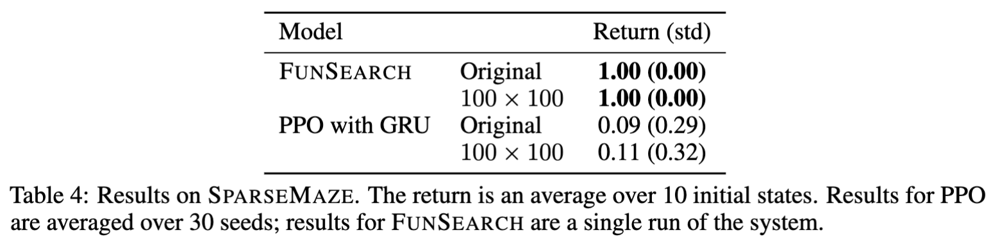
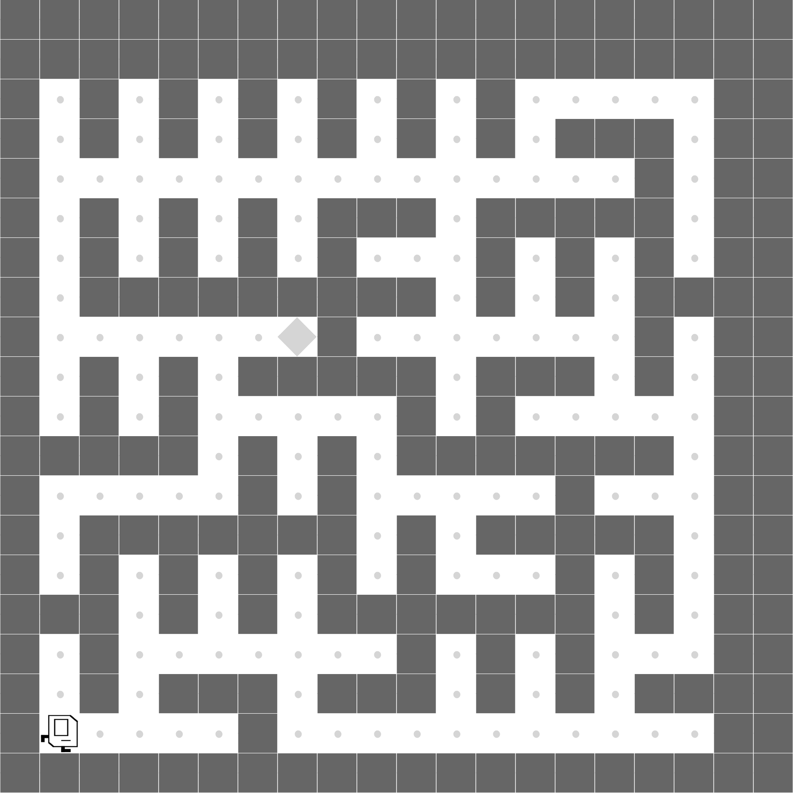
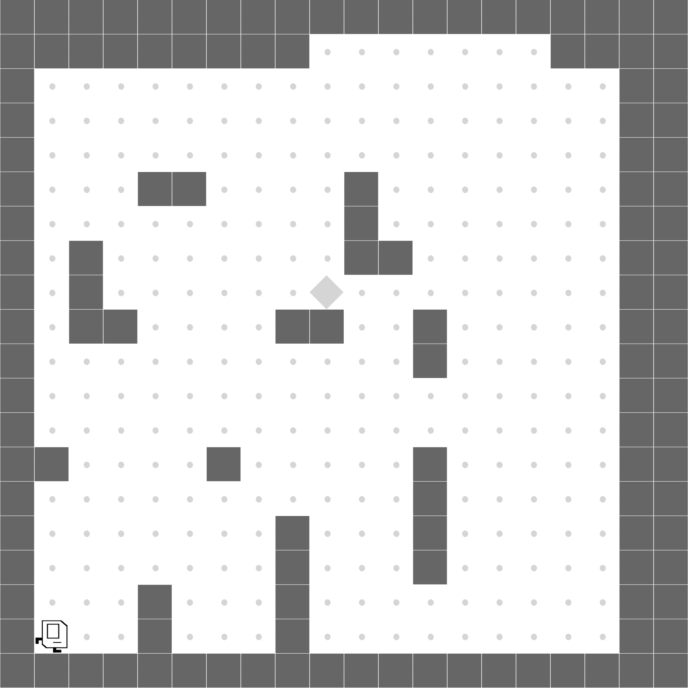

Programmatic policies are often reported to generalize better than neural policies in reinforcement learning (RL) benchmarks. We revisit some of these claims and show that much of the observed gap arises from uncontrolled experimental factors rather than intrinsic representational reasons. Re-evaluating three core benchmarks used in influential papers---TORCS, Karel, and Parking---we find that neural policies, when trained with a few modifications, such as sparse observations and cautious intrinsic reward functions, can match or exceed the out-of-distribution (OOD) generalization of programmatic policies. We argue that a representation enables OOD generalization if (i) the policy space it induces includes a generalizing policy and (ii) the search algorithm can find it. The neural and programmatic policies in prior work are comparable in OOD generalization because the domain-specific languages used induce policy spaces similar to those of neural networks, and our modifications help the gradient search find generalizing solutions. By disentangling representational factors from experimental confounds, we advance our understanding of what makes a representation succeed or fail at OOD generalization.
For The Open Car Racing Simulator (TORCS) we show that using a more cautious reward function slows down the agent, enabling better generalization results.

Using sparse observation and augmenting observations with the previous action allows fully-connected policies to generalize to larger grids (100×100), outperforming convolutional and LSTM baselines that fail to scale and perform better than LEAPS.

We introduce a SPARSE MAZE task, which has wider corridors than normal MAZE, requiring explicit memory (stacks or queues) to find shortest paths. Neural policies struggle, while programmatic search synthesizes an optimal BFS solution. We used FunSearch for generating programmatic policies for this section.


